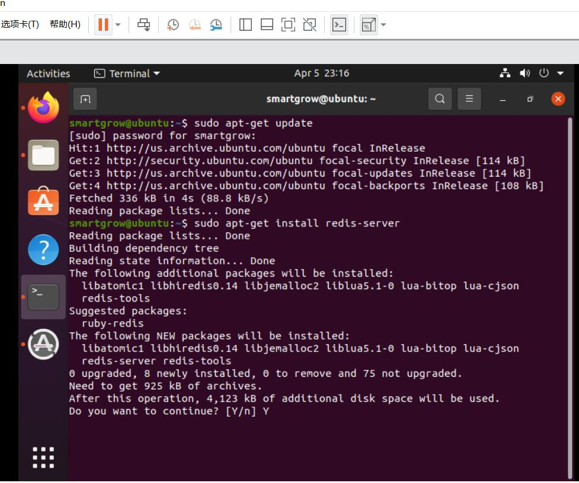
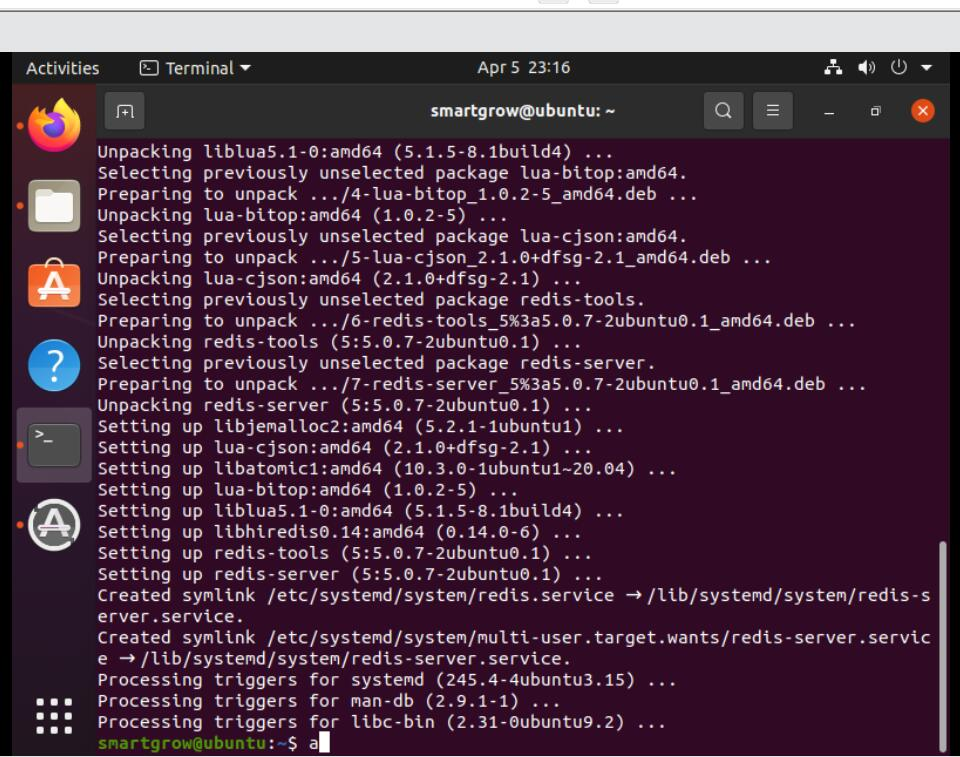
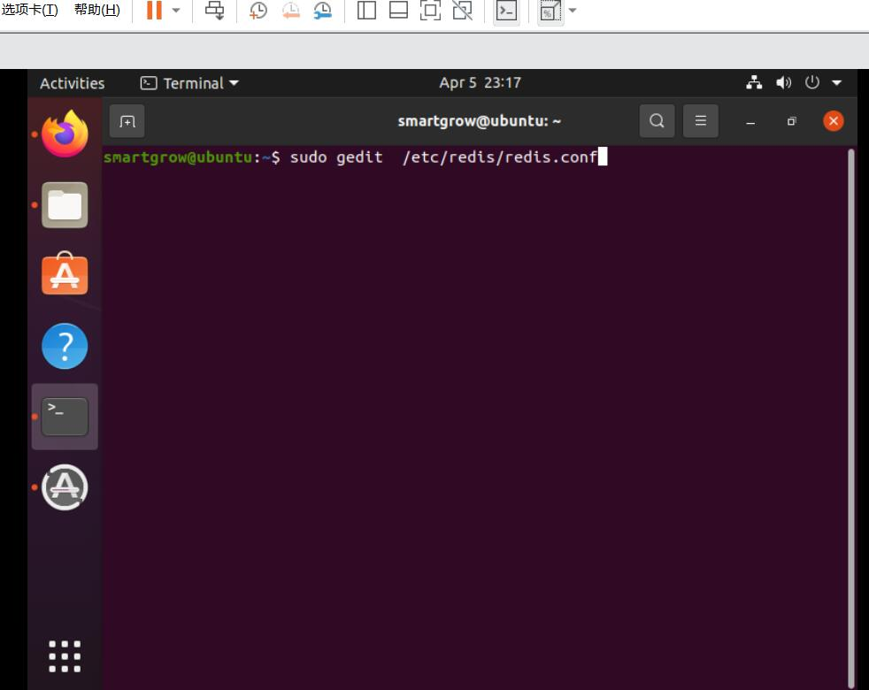
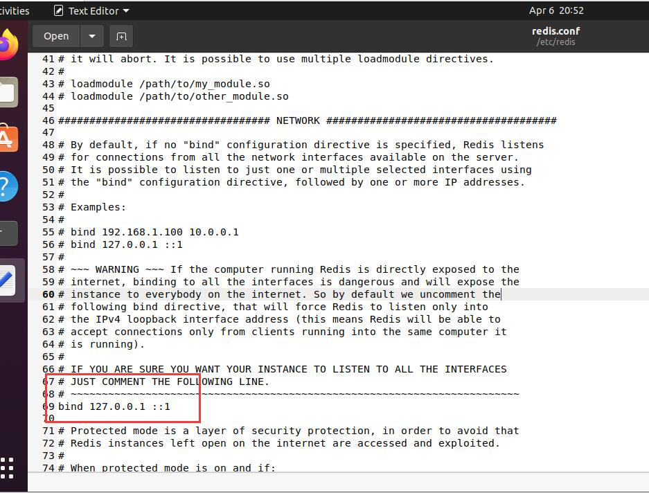
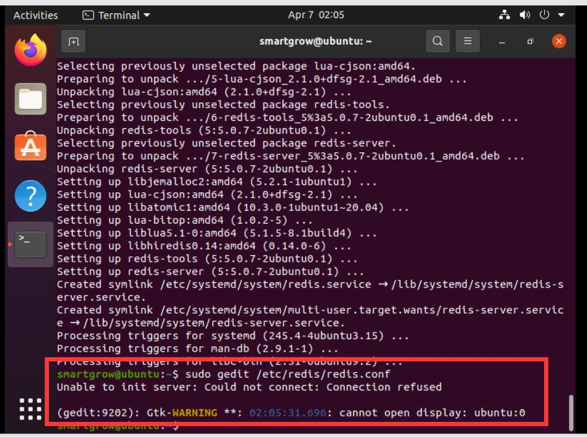
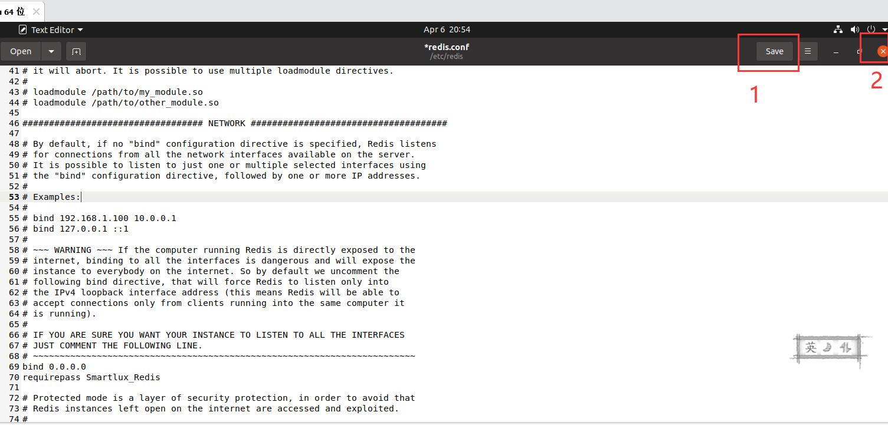

step1. 安装redis-server
执行如下命令：sudo apt-get install redis-server。并在询问中输入Y。如图：
如果出现下如图情况，说明操作成功。
step2. 打开配置参数
执行如下命令：sudo gedit /etc/redis/redis.conf。如图：
此时弹出一个新窗口。如图：
如果没有弹出窗口，而是出现如图所示情况
关闭命令窗口，然后重新打开命令窗口，再次输入sudo gedit /etc/redis/redis.conf
step3. 修改配置参数
将窗口中的 bind 127.0.0.1 ::1修改为
bind 0.0.0.0
requirepass Smartlux_Redis
保存文件并退出。
